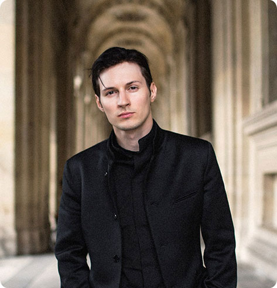
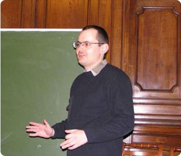
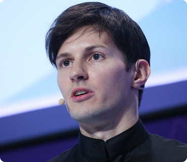
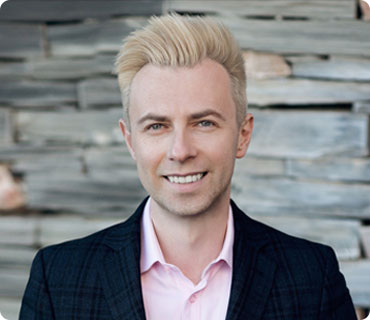

|
Па́вел Вале́рьевич Ду́ров (род. 10 октября 1984, Ленинград) — российский предприниматель, программист, долларовый миллиардер, один из создателей социальной сети «ВКонтакте» и одноимённой компании, кроссплатформенного мессенджера Telegram и других проектов. Бывший генеральный директор «ВКонтакте» (2006—2014).
В 2001 году с отличием окончил Академическую гимназию, в 2006 — филологический факультет Санкт-Петербургского государственного университета по специальности «Английская филология и перевод» с красным дипломом (который до сих пор не забрал). Сразу по окончании вуза создал «ВКонтакте», крупнейшую на данный момент социальную сеть в России. На 2011 год с состоянием в 7,9 млрд рублей занимал 350-е место в рейтинге российских миллиардеров. Является вегетарианцем и придерживается либертарианских политических взглядов.Перейти к разделу «#Взгляды и убеждения» Дурова называют российским Марком Цукербергом, а также часто критикуют за эксцентричные выходки и высказывания. 19 ноября 2012 года вышла книга Николая Кононова «Код Дурова», описывающая становление «ВКонтакте» и её создателя; на её экранизацию в этом же году приобрела права компания AR Films.Перейти к разделу «#Критика и признание» В 2014 году покинул Россию и заявил, что не собирается возвращаться.Перейти к разделу «#Эмиграция» С 2016 года входит в список 200 богатейших бизнесменов России Forbes. За четыре года его состояние увеличилось с $600 млн до $3,4 млрд. В 2020 году он занимает 30-е место в рейтинге по России и 565-е место в мире. 6 апреля 2021 года журнал Forbes опубликовал новый список — Дуров занял 112 место среди мировых миллиардеров. Его состояние оценивается в 17,2 миллиарда долларов. Среди российских миллиардеров он занял 8 место. |

|
Команда Telegram
Основные действующие лица

|

|

|